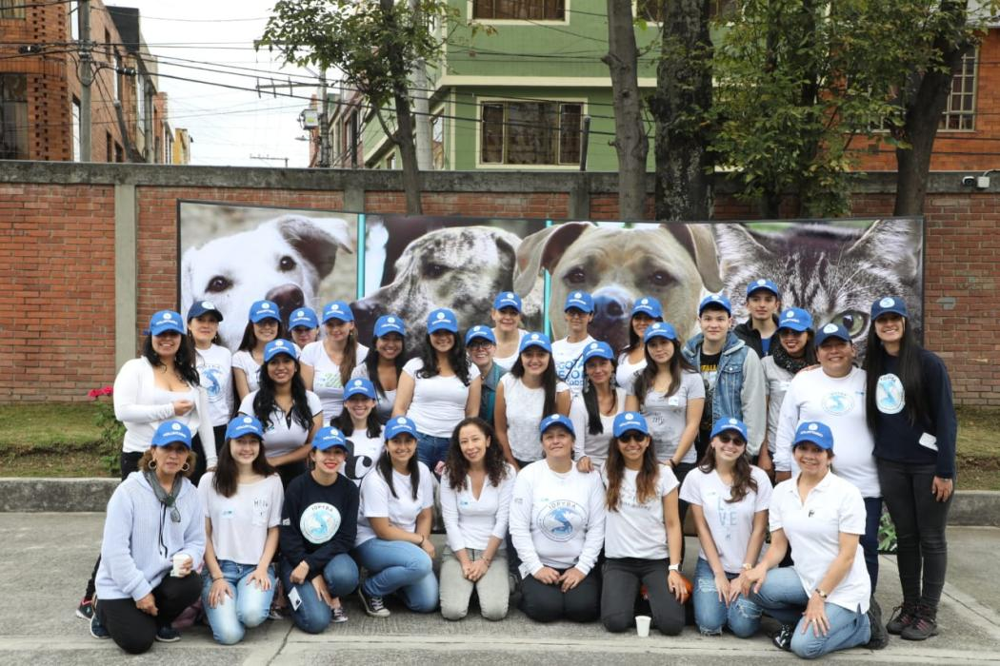

¿Quiénes somos?
Somos una organización dedicada al rescate, cuidado y protección de animales en situación de abandono, maltrato o riesgo. Nuestro proyecto nació gracias al compromiso de personas amantes de los animales que decidieron unirse para brindar ayuda a perros y gatos que necesitaban una segunda oportunidad. Desde nuestros comienzos trabajamos con responsabilidad, empatía y mucho amor para cambiar la vida de cientos de mascotas que esperan encontrar un hogar seguro y lleno de cariño.
Cada rescate representa una nueva historia de esperanza. Muchos de los animales que llegan a nosotros han pasado días o incluso meses viviendo en la calle, soportando hambre, frío, enfermedades y miedo. Por eso, nuestro trabajo no solo consiste en rescatarlos, sino también en acompañarlos durante todo su proceso de recuperación física y emocional. Creemos que cada animal merece ser tratado con respeto, paciencia y dignidad.
Nuestro equipo está formado por voluntarios, colaboradores y personas comprometidas con el bienestar animal. Entre todos realizamos tareas de rescate, traslados, alimentación, difusión en redes sociales, campañas solidarias y búsqueda de familias responsables para adopción. También contamos con el apoyo de veterinarios y hogares de tránsito que ayudan a brindar atención y cuidados a cada mascota rescatada.
Además de ayudar a los animales, buscamos generar conciencia en la comunidad sobre la importancia de la adopción responsable, la castración y el cuidado adecuado de las mascotas. Sabemos que el abandono es un problema que afecta a miles de animales todos los días, por eso trabajamos para promover valores como el respeto, la solidaridad y la responsabilidad.
Gracias al apoyo de voluntarios, familias adoptantes y personas solidarias que colaboran con donaciones, podemos continuar creciendo y ayudando a más animales. Cada aporte, por pequeño que sea, nos permite seguir realizando rescates, comprando alimento, medicamentos y ofreciendo mejores oportunidades de vida a quienes más lo necesitan.
Nuestro mayor logro es ver a cada animal recuperarse, volver a confiar en las personas y finalmente encontrar una familia que lo ame para siempre. Creemos que rescatar no solo cambia la vida de una mascota, sino también la de quienes deciden abrirles las puertas de su hogar y de su corazón.
Principales objetivos
- Rescatar animales en situación de calle, abandono o maltrato.
- Brindar atención veterinaria, vacunación y castración a cada animal rescatado.
- Proporcionar alimento, abrigo y un espacio seguro para su recuperación.
- Promover la adopción responsable y la búsqueda de familias comprometidas.
- Fomentar la conciencia sobre el respeto y el cuidado de los animales.
- Realizar campañas de difusión, concientización y rescate en la comunidad.
- Trabajar junto a voluntarios, veterinarios y hogares de tránsito solidarios.
- Reducir el abandono animal mediante educación y castración responsable.
- Garantizar que cada animal tenga una segunda oportunidad de vida digna.
Historias de rescates

Coco apareció una noche lluviosa, temblando y muy asustado. Había pasado varios días solo en la calle, buscando refugio y comida. Cuando la Red de Rodolfo al Rescate lo encontró, necesitaba atención, cariño y alguien que creyera nuevamente en él.
Gracias al cuidado de los voluntarios, Coco recibió controles veterinarios, alimento y un lugar seguro donde recuperarse. Poco a poco volvió a confiar, comenzó a jugar y a mover la cola cada vez que alguien se acercaba.
Hoy Coco tiene una familia que lo ama y un hogar donde nunca más estará solo. Su historia nos recuerda que, con amor y compromiso, cada rescate puede convertirse en una nueva oportunidad.”

Bruno fue encontrado una tarde fría, escondido debajo de una parada de colectivo. Estaba cansado, con hambre y muy asustado después de pasar varios días solo en la calle. Cuando los voluntarios lo rescataron, necesitaba cuidados, paciencia y mucho cariño para volver a confiar en las personas.
Gracias al amor y dedicación de quienes lo ayudaron, Bruno recibió atención veterinaria, alimento y un lugar seguro donde descansar. Con el paso de los días comenzó a sentirse mejor, volvió a jugar y a mover la cola cada vez que alguien se acercaba para acariciarlo.
Hoy Bruno vive feliz junto a una familia que lo ama y lo acompaña todos los días. Tiene un hogar cálido, juguetes y nunca más tendrá que dormir solo. Su historia demuestra que cada rescate puede cambiar una vida y convertirse en una nueva oportunidad llena de amor.
Nuestro equipo
